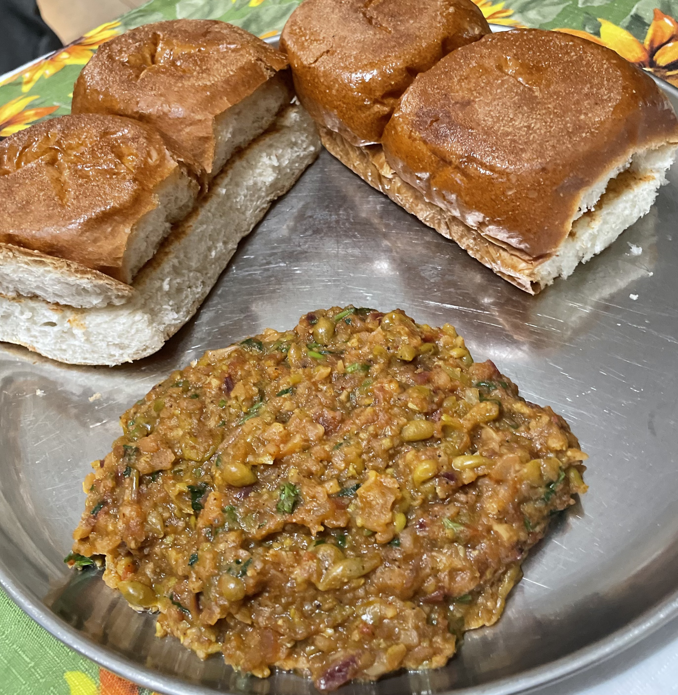

Pav Bhaji

Description
Pav Bhaji is an Indian fast food consisting of a thick spicy vegetable gravy served with soft dinner rolls. In Hindi and Marathi, the word 'Pav' means 'Bread roll or dinner roll' and 'Bhaji' means 'a vegetable dish'. Since these are served together as a meal, it is known as Pav Bhaji.
Ingredients
- butter
- tomatoes
- peas
- green bell pepper
- boiled potatoes
- salt
- kashmiri red chili powder
- tumeric
- pav bhaji masala
- kasuri methi
- ginger garlic paste
- onion
- lemon
- pav
Directions
- Firstly, in a large wok heat 1 tbsp butter and add vegetables. cook and mash well.
- Now add 1 tsp chilli powder, ¼ tsp turmeric, 1 tsp pav bhaji masala, 1 tsp kasuri methi and 2 tbsp coriander leaves.
- Heat a tbsp of butter and add ¼ tsp chilli powder, ½ tsp pav bhaji masala, 1 tsp kasuri methi.
- Also add 1 tbsp coriander leaves, 1 tsp ginger garlic paste, 1 onion and ½ lemon juice. saute well.
- Boil and mash for 5 minutes adjusting consistency.
- Finally, serve pav and bhaji as pav bhaji.
Back to Home